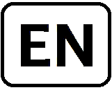
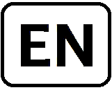

Bienvenue
Conférence pancanadienne en théorie des nombres
La première conférence pancanadienne en théorie des nombres (CNTA-0) a eu lieu en 1987 à l'Université Laval (ville de Québec). L'objectif initial du CNTA-0 était de faire progresser et de promouvoir la recherche en théorie des nombres, et ce, principalement, au Canada. Afin de poursuivre cet objectif, le CNTA organise des conférences à tous les deux ans, lesquelles permettent aux étudiants et aux chercheurs canadiens et internationaux d'être exposés aux résultats et aux développements les plus récents en théorie des nombres. Les conférences CNTA sont parmi les conférences en théorie des nombres les plus grandes dans le monde. Une liste des conférences CNTA passées se trouve ici.
La XVe conférence CNTA aura lieu pour une deuxième fois à l'Université Laval du 9 au 13 juillet 2018. Il aura donc fallu attendre un peu plus de 30 ans pour que le CNTA revienne à son berceau d'origine.
Album photo, affiche principale, affiche de la conférence grand public, affiche pour le prix Ribenboim.Diapos et d'autres documents se trouvent ici.
Liste des participants ici
Inscriptions et financement
Les participants sont invités à s'inscrire à l'adresse suivante: ici. Les frais d'inscription sont comme suit:
| Avant le 16 mai | En date du 16 mai ou ultérieurement | |
| Étudiants/postdoctorants | 75 CAD | 95 CAD |
| Chercheurs sans subvention individuelle | 100 CAD | 140 CAD |
| Chercheurs avec une subvention individuelle | 225CAD | 285CAD |
Prix Ribenboim
Nous sommes heureux d'annoncer que Maksym Radziwill a été choisi comme le récipiendaire du prix Ribenboim 2018 décerné par l'Association Canadienne en Théorie des Nombres (CNTA). Le prix Ribenboim, nommé ainsi en l'honneur du mathématicien Paulo Ribenboim, reconnaît des contributions importantes dans le domaine de la théorie des nombres réalisées par un mathématicien canadien ou un mathématicien ayant des liens étroits avec les mathématiques au Canada. Les anciens lauréats sont: Andrew Granville (1999), Henri Darmon (2002), Michael Bennett (2004), Vinayak Vatsal (2006), Adrian Iovita (2008), Valentin Blomer (2010), Dragos Ghioca (2012), Florian Herzig (2014), Jacob Tsimerman (2016). La cérémonie de remise du prix, événement faisant partie de la conférence CNTA-XV, aura lieu au Palais des Congrès le 10 juillet. Comme le veut la tradition, lors de cette cérémonie, le gagnant y sera invité à donner un exposé plénier. Maksym à terminé ses études sous-graduées à McGill. C'est durant ces mêmes études qu'il travailla avec son mentor, Andrew Granville (qui était alors à l'Université de Montréal). Par la suite, il compléta un doctorat à Stanford avec K. Soundararajan, et après avoir passé une année à l'Institute of Advanced Studies, il partit travailler avec Henryk Iwaniec à Rutgers. Finalement, en 2016, il fut engagé comme professeur adjoint à McGill. Son domaine de recherche est en théorie analytique des nombres avec une emphase sur la distribution des nombres premiers et les fonctions multiplicatives. L'étude de ce domaine consiste à déconstruire de manière détaillée certaines fonctions spéciales associées à des objets arithmétiques comme les nombres premiers et les représentations galoisiennes. En particulier, c'est à l'intérieur de ce domaine que s'inscrit l'un des problèmes mathématiques (non-résolu) les plus célèbres à savoir l'hypothèse de Riemann, ce même problème faisant parti de la liste des 7 problèmes du prix du millénaire de l'institut Clay. Le résultat probablement le plus spectaculaire de Maksym est son travail conjoint avec Matomäki sur les fonctions multiplicatives sur les petits intervalles (Annals of Math, 2016). Cet article améliore plus d'une centaine d'articles écrits sur le même sujet et il n'est pas exagéré de dire que sa parution a boulversé le domaine. En particulier, ce travail conjoint a permis à Maksym et Matomäki de décrocher le prestigieux prix Ramanujan. Un autre résultat flamboyant de Maksym est sont travail conjoint avec K. Soundararajan sur les moments et la distribution des tordues quadratiques de courbes elliptiques (Inventiones Math., 2015). Cet article contient quelques théorèmes remarquables et admet des applications importantes sur la distribution et la taille des groupes de Tate-Shafarevich. Jusqu'à maintenant, la feuille de route mathématique de Maksym démontre à la fois une profondeur, une versatilité et une grande productivité. Il sera intéressant de voir jusqu'où il ira!Lieu
Tous les exposés auront lieu au deuxième étage du pavillon Alexandre-Vachon à l'Université Laval. Voir la carte.
Pour les options de restaurant, voir ici.
Nous somme heureux de dédier cette conférence au professeur PAULO RIBENBOIM pour souligner ses 90 ans:
''Les nombres, des amis qui nous donnent des problèmes''
Conférence grand public
Jean-Marie De Koninck (Laval) - La vie secrète des mathématiques
Conférenciers pléniers
Henri Darmon (McGill)
Andrew Granville (Montréal)
Joseph Oesterlé (Paris VI)
Ken Ono (Emory)
Bjorn Poonen (MIT)
Damien Roy (Ottawa)
Dinesh Thakur (Rochester)
Jared Weinstein (Boston University)
Melanie Matchett Wood (Wisconsin-Madison)
Conférenciers invités
Fabrizio Andreatta (Milan)
Alex Bartel (Glasgow)
Laurent Berger (Lyon)
Pierre Charollois (Jussieu)
Huayi Chen (Paris 7)
Vladimir Dokchitser (KCL)
Sary Drappeau (Aix-Marseille)
Tom Fisher (Cambridge)
Dimitris Koukoulopoulos (Montréal)
Holly Krieger (Cambridge)
Youness Lamzouri (York)
Jaclyn Lang (Max Planck)
Robert Lemke Oliver (Tufts)
Florian Luca (Witwatersrand)
Steven Miller (Williams College)
Yiannis Petridis (UCL)
Siddarth Sankaran (Manitoba)
Will Sawin (Columbia/Clay)
Damaris Schindler (Utrecht)
Arul Shankar (Toronto)
Vinayak Vatsal (UBC)
Stefano Vigni (Genova)
Michel Waldschmidt (Jussieu)
David Zywina (Cornel)
Programme
Aperçu du programme scientifique
Programme complet
Résumés des conférences pleniers
Résumés des conférences invitées
Résumés des conférences contributives
D'autres documents
Hébergement
Résidences étudiantes le Sommet
Cliquez ici pour voir leur localisation. Chaque appartement contient trois chambres séparées (chacune munie d'un lit double), une cuisine, une chambre de bain (évier + douche), une pièce d'eau (évier et toilette), et un balcon ( Cliquez ici pour télécharger le plan d'un appartement ). Ces appartements sont situés à 15 minutes à pied du lieu de la conférence et à trois minutes à pied d'une épicerie. Le nombre de ces chambres est très limité et une priorité sera donnée aux étudiants. Le coût pour une chambre est de 65$ par nuit (taxes incluses). Si vous êtes intéressés contactez par courriel Hugo Chapdelaine .Renseignements de voyage
- Les participants qui ne sont pas résidents au Canada devraient vérifier les conditions d'entrée actuelles au Canada ici. En particulier, il y a une nouvelle règle depuis 2016: "Tous les étrangers originaires d’un pays dispensé de l’obligation de visa doivent obtenir une autorisation de voyage électronique (AVE), sauf les citoyens des États-Unis et certains autres petits groupes."
- Le tourisme dans la ville de Québec
Organisateurs
Comité local d'organisation
Hugo Chapdelaine
Jean-Marie De Koninck
Antonio Lei
Claude Levesque
Comité scientifique
Kathrin Bringmann (University of Cologne)
Annales mathématiques du Québec (Springer)
Nils Bruin (Simon Fraser University)
Gérard Freixas (CNRS - Institut de Mathématiques de Jussieu)
Stephen Kudla (University of Toronto)
Matilde Lalin (Université de Montréal)
Antonio Lei (Université Laval)
Christelle Vincent (University of Vermont)
Commanditaires
Centre de recherches mathématiques
Centre des congrès de Québec
Centre Interuniversitaire en Calcul Mathématique Algébrique
Compositio Mathematica
Institut des sciences mathématiques
Institut Tutte pour les mathématiques et le calcul
Journal de théorie des nombres de Bordeaux
Journal of Number Theory (Elsevier)
National Science Foundation
Number Theory Foundation
Unité Mixte Internationale